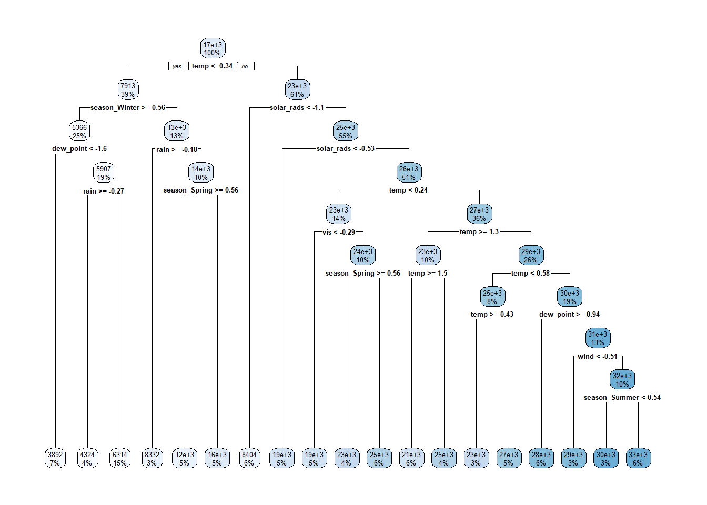
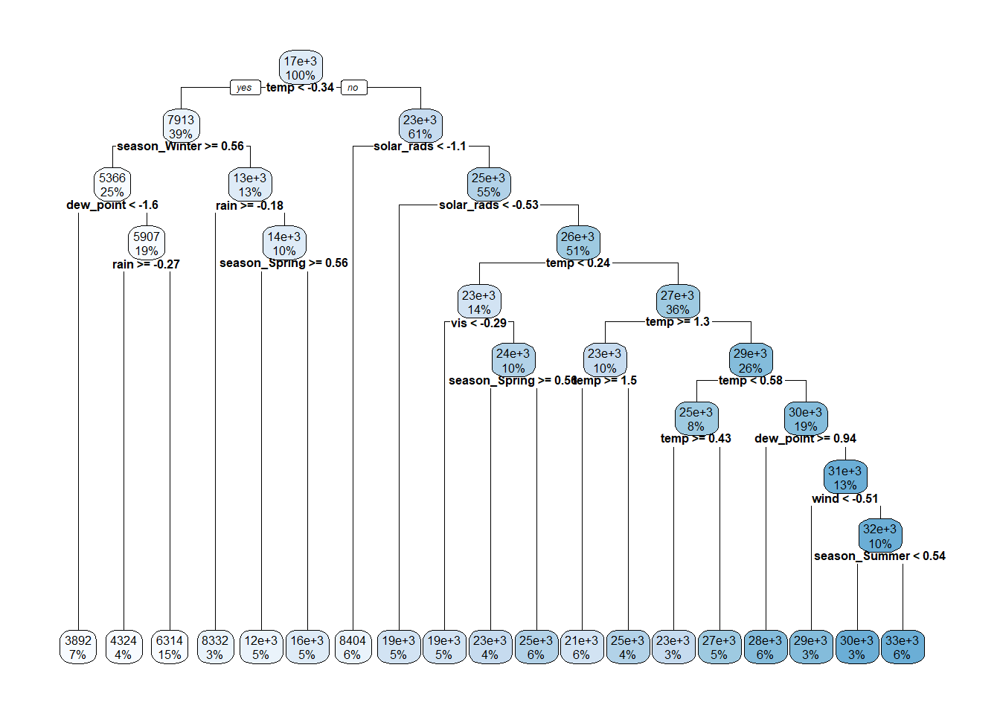

First step we are going to take to create the new models is to just run the relevant code from HW8 in order to simplfy the environment we will be working in. Additionally, some of this code will be taken from the HW8 key to ensure any errors made in my previous code do not cross over.
# Reading in Datalibrary(tidyverse)
── Attaching core tidyverse packages ──────────────────────── tidyverse 2.0.0 ──
✔ dplyr 1.1.4 ✔ readr 2.1.5
✔ forcats 1.0.0 ✔ stringr 1.5.1
✔ ggplot2 3.5.1 ✔ tibble 3.2.1
✔ lubridate 1.9.3 ✔ tidyr 1.3.1
✔ purrr 1.0.2
── Conflicts ────────────────────────────────────────── tidyverse_conflicts() ──
✖ dplyr::filter() masks stats::filter()
✖ dplyr::lag() masks stats::lag()
ℹ Use the conflicted package (<http://conflicted.r-lib.org/>) to force all conflicts to become errors
Rows: 8760 Columns: 14
── Column specification ────────────────────────────────────────────────────────
Delimiter: ","
chr (4): Date, Seasons, Holiday, Functioning Day
dbl (10): Rented Bike Count, Hour, Temperature(°C), Humidity(%), Wind speed ...
ℹ Use `spec()` to retrieve the full column specification for this data.
ℹ Specify the column types or set `show_col_types = FALSE` to quiet this message.
# Changing date columnbike_data <- bike_data |>mutate(date = lubridate::dmy(Date)) |>select(-Date)# Creating factorsbike_data <- bike_data |>mutate(season =factor(Seasons),holiday =factor(Holiday), fn_day =factor(`Functioning Day`)) |>select(-Seasons, -Holiday, -`Functioning Day`)# renaming variablesbike_data <- bike_data |>rename('bikes'=`Rented Bike Count`,'hour'="Hour","temp"=`Temperature(°C)`,"wind"=`Wind speed (m/s)`,"humidity"=`Humidity(%)`,"vis"=`Visibility (10m)`,"dew_point"=`Dew point temperature(°C)`,"solar_rads"=`Solar Radiation (MJ/m2)`,"rain"="Rainfall(mm)","snow"=`Snowfall (cm)`)# removing function day bike_data <- bike_data |>filter(fn_day =="Yes") |>select(-fn_day)# using group by to find the sum of the bike count, rainfall, and snowfall variables bike_data <- bike_data |>group_by(date, season, holiday) |>summarize(bikes =sum(bikes),temp =mean(temp),humidity =mean(humidity),wind =mean(wind),vis =mean(vis),dew_point =mean(dew_point),solar_rads =mean(solar_rads),rain =sum(rain),snow =sum(snow)) |>ungroup()
`summarise()` has grouped output by 'date', 'season'. You can override using
the `.groups` argument.
# Data checkbike_data
# A tibble: 353 × 12
date season holiday bikes temp humidity wind vis dew_point
<date> <fct> <fct> <dbl> <dbl> <dbl> <dbl> <dbl> <dbl>
1 2017-12-01 Winter No Holiday 9539 -2.45 45.9 1.54 1871. -13.5
2 2017-12-02 Winter No Holiday 8523 1.32 62.0 1.71 1471. -5.72
3 2017-12-03 Winter No Holiday 7222 4.88 81.5 1.61 456. 1.88
4 2017-12-04 Winter No Holiday 8729 -0.304 52.5 3.45 1363. -9.93
5 2017-12-05 Winter No Holiday 8307 -4.46 36.4 1.11 1959. -17.4
6 2017-12-06 Winter No Holiday 6669 0.0458 70.8 0.696 1187. -5.19
7 2017-12-07 Winter No Holiday 8549 1.09 67.5 1.69 949. -5.01
8 2017-12-08 Winter No Holiday 8032 -3.82 41.8 1.85 1872. -15.4
9 2017-12-09 Winter No Holiday 7233 -0.846 46 1.08 1861. -11.2
10 2017-12-10 Winter No Holiday 3453 1.19 69.7 2.00 1043. -4.03
# ℹ 343 more rows
# ℹ 3 more variables: solar_rads <dbl>, rain <dbl>, snow <dbl>
# Data splitset.seed(11)bike_split <-initial_split(bike_data, prop =0.75, strata = season)bike_train <-training(bike_split)bike_test <-testing(bike_split)bike_cv10 <-vfold_cv(bike_train, 10)# Recipe 1 (only one needed for HW9 as per discussion form)MLR_rec <-recipe(bikes ~ ., data = bike_train) |>step_date(date, features ="dow") |>step_mutate(weekend_weekday =factor(if_else(date_dow %in%c("Sat", "Sun"), "Weekend", "Weekday"))) |>step_rm(date, date_dow) |>step_dummy(season, holiday, weekend_weekday) |>step_normalize(all_numeric(), -bikes)# linear model specMLR_spec <-linear_reg() |>set_engine("lm")# Model fit using 10 fold CVMLR_CV_fit <-workflow() |>add_recipe(MLR_rec) |>add_model(MLR_spec) |>fit_resamples(bike_cv10)# Getting metricsrbind(MLR_CV_fit |>collect_metrics())
# A tibble: 2 × 6
.metric .estimator mean n std_err .config
<chr> <chr> <dbl> <int> <dbl> <chr>
1 rmse standard 4284. 10 165. Preprocessor1_Model1
2 rsq standard 0.822 10 0.0151 Preprocessor1_Model1
# Fitting model to training setMLR_last_fit <-workflow() |>add_recipe(MLR_rec) |>add_model(MLR_spec) |>last_fit(bike_split)MLR_last_fit |>collect_metrics()
# A tibble: 2 × 4
.metric .estimator .estimate .config
<chr> <chr> <dbl> <chr>
1 rmse standard 3980. Preprocessor1_Model1
2 rsq standard 0.846 Preprocessor1_Model1
# Final modelMLR_last_fit |>extract_fit_parsnip() |>tidy()
Now that we have explored the fit of our multiple linear regression models using 10 fold cross validation, we are going to explore what it the fit of a LASSO model will be like. A LASSO model is a Least Angle Subset and Selection Operator, which is similar to the least squares but a penalty is place on the sum of the absolute values of the regression coefficients. Additionally, a (>0) is a tuning parameter and this sets coefficents to 0 as you increase your a (aka shrink).
To start we need to create a LASSO recipe then create a spec that includes tune() in linear_reg() as a penalty with a mixture that is equal to 1. The mixture is what actually turns it into a LASSO model (or it would be an elastic net model), while penalty = tune() tells tidymodels we are going to use a resampling method, and glmnet is what allows us to fit a more complicated model
# LASSO recipe (Doing this for clarity s sake even though I could reuse the MLR recipe)LASSO_rec <-recipe(bikes ~ ., data = bike_train) |>step_date(date, features ="dow") |>step_mutate(weekend_weekday =factor(if_else(date_dow %in%c("Sat", "Sun"), "Weekend", "Weekday"))) |>step_rm(date, date_dow) |>step_dummy(season, holiday, weekend_weekday) |>step_normalize(all_numeric(), -bikes) # Important note LASSO models should be fit on standardized predictors# Creating model specLASSO_spec <-linear_reg(penalty =tune(), mixture =1) |>set_engine("glmnet")
The next step in the process is to create our workflow which is exactly the same process used to create the MLR workflow.
To actually fit the model we are going to need to use tune_grid() and grid_regular(), where tune_grid() specifies the values of the tuning parameter, and grid_regular() is a function that chooses a grid based of reasonable values.
# Loading in glmnetlibrary(glmnet)
Loading required package: Matrix
Attaching package: 'Matrix'
The following objects are masked from 'package:tidyr':
expand, pack, unpack
Loaded glmnet 4.1-8
# Creating grid LASSO_grid <- LASSO_wkf |>tune_grid(resamples = bike_cv10,grid =grid_regular(penalty(), levels =100),metrics =metric_set(rmse, mae)) # Levels is how many LASSO models you want to createLASSO_grid
Just as before in the MLR model we need to collect all the metrics across the 100 models we created using collect_metrics(), but to make the values easier to understand we are going to plot it.
Based off the plot we can see that there is virtually no difference between the RMSE values for our LASSO models, but to get the one with the smallest penalty we will use select_best().
Now that we have the best one we can use finalize_workflow to tell R to finish the training using the smallest penalty we found in tune(). Then we can fit it to the training model to get our final model fit
# checking to make sure it sets the correct penalty in tune()LASSO_wkf |>finalize_workflow(LASSO_lowest)
# Creating final model fitLASSO_final <- LASSO_wkf |>finalize_workflow(LASSO_lowest) |>fit(bike_train)# Using tidy() to display the model fittidy(LASSO_final)
Tree based methods are a flexible way to split up predictor space into regions. Each of the regions created can have a different prediction made for it. A regression tree is used when the goal is to predict a continuous response, normally using the mean of observations in region as the prediction.
# Making new recipe for clarityreg_rec <- LASSO_rec # Creating decision_treereg_spec <-decision_tree(tree_depth =tune(),min_n =20,cost_complexity =tune()) |>set_engine("rpart") |>set_mode("regression")# Creating workflowreg_wkf <-workflow() |>add_recipe(reg_rec) |>add_model(reg_spec)
The next step is to use CV to select the tuning parameters we will use and to do so we will once again use tune_grid().
Now that this is setup we should sort this by getting the smallest rmse value, and while doing this will filter just to show rmse. After that we will use select_best() to grab the best tuning parameter values.
# collecting metricsreg_fit |>collect_metrics()
# A tibble: 100 × 8
cost_complexity tree_depth .metric .estimator mean n std_err .config
<dbl> <int> <chr> <chr> <dbl> <int> <dbl> <chr>
1 0.0000000001 1 mae standard 4969. 10 243. Preprocess…
2 0.0000000001 1 rmse standard 6432. 10 350. Preprocess…
3 0.000000001 1 mae standard 4969. 10 243. Preprocess…
4 0.000000001 1 rmse standard 6432. 10 350. Preprocess…
5 0.00000001 1 mae standard 4969. 10 243. Preprocess…
6 0.00000001 1 rmse standard 6432. 10 350. Preprocess…
7 0.0000001 1 mae standard 4969. 10 243. Preprocess…
8 0.0000001 1 rmse standard 6432. 10 350. Preprocess…
9 0.000001 1 mae standard 4969. 10 243. Preprocess…
10 0.000001 1 rmse standard 6432. 10 350. Preprocess…
# ℹ 90 more rows
# using select_best()reg_best_params <- reg_fit |>select_best(metric ="rmse")reg_best_params
Next step is to finalize the data using finalize_workflow.
# Final fitreg_final <- reg_wkf |>finalize_workflow(reg_best_params) |>fit(bike_train)
To see the way that data is actually fit we can plot the tree
# loading in rpart.plotlibrary(rpart.plot)# Creating plotreg_final %>%extract_fit_engine() %>% rpart.plot::rpart.plot(roundint =FALSE)

Bagged Tree Model
A bagged tree model is when you use bootstrapping aggregation minus a general method. Bootstrapping is when you resample from the data (non-parametric) or a fitted model (parametric), and have a method or estimation applied to each resample. This can be used to obtain standard errors or construct confidence intervals, but in our case we are going to be looking at standard errors.
# loading in baguette libarylibrary(baguette)# Renaming rec for claritybag_rec <- LASSO_rec# Setting up modelbag_spec <-bag_tree(tree_depth =tune(), min_n =20, cost_complexity =tune()) |>set_engine("rpart") |>set_mode("regression")# Creating workflowbag_wkf <-workflow() |>add_recipe(bag_rec) |>add_model(bag_spec)
Now we are going to fit to CV folds as we did to the other models, but of important note this is not really necessary with bagged tree models as we could instead just use out-of-bag observations to determine how well our model is working. We are also going to create a new reg_grid to tune our model.
# Creating fit and gridbag_fit <- bag_wkf |>tune_grid(resamples = bike_cv10,grid =grid_regular(cost_complexity(),tree_depth(),levels =5),metrics =metric_set(rmse, mae)) # only doing five levels because it takes a very long time to load# Collecting metrics across the folds bag_fit |>collect_metrics() |>filter(.metric =="rmse") |>arrange(cost_complexity)
# A tibble: 25 × 8
cost_complexity tree_depth .metric .estimator mean n std_err .config
<dbl> <int> <chr> <chr> <dbl> <int> <dbl> <chr>
1 0.0000000001 1 rmse standard 6119. 10 371. Preprocess…
2 0.0000000001 4 rmse standard 3591. 10 138. Preprocess…
3 0.0000000001 8 rmse standard 3387. 10 210. Preprocess…
4 0.0000000001 11 rmse standard 3200. 10 182. Preprocess…
5 0.0000000001 15 rmse standard 3222. 10 174. Preprocess…
6 0.0000000178 1 rmse standard 6210. 10 348. Preprocess…
7 0.0000000178 4 rmse standard 3622. 10 151. Preprocess…
8 0.0000000178 8 rmse standard 3289. 10 183. Preprocess…
9 0.0000000178 11 rmse standard 3247. 10 196. Preprocess…
10 0.0000000178 15 rmse standard 3389. 10 190. Preprocess…
# ℹ 15 more rows
Now we need to once again use select_best() to grab our best parameter and then fit it on to the training data.
The final model we will be making is a Random forest model, which also uses bagging. It creates multiple trees from the bootstrap samples then it averages the results from them to create a final prediction. The big difference between it and a bagged tree model is that it is does not use all predictors at every step, instead it randomly splits them into a subset for a number of times based off the tuning parameters. If a really strong predictor exists it will likely cause each bootstrap tree to use it for the first split, which makes bagges trees have more correlated predictions.
# Loading in librarylibrary(ranger)# renaming recipe for clarityrf_rec <- LASSO_rec# creating model rf_spec <-rand_forest(mtry =tune()) |>set_engine("ranger") |>set_mode("regression")# Creating workflowrf_wkf <-workflow() |>add_recipe(rf_rec) |>add_model(rf_spec)
Now we need to once again set the grid and fit.
# Creating fit and gridrf_fit <- rf_wkf |>tune_grid(resamples = bike_cv10,grid =10,metrics =metric_set(rmse, mae))
i Creating pre-processing data to finalize unknown parameter: mtry
══ Workflow [trained] ══════════════════════════════════════════════════════════
Preprocessor: Recipe
Model: rand_forest()
── Preprocessor ────────────────────────────────────────────────────────────────
5 Recipe Steps
• step_date()
• step_mutate()
• step_rm()
• step_dummy()
• step_normalize()
── Model ───────────────────────────────────────────────────────────────────────
Ranger result
Call:
ranger::ranger(x = maybe_data_frame(x), y = y, mtry = min_cols(~11L, x), num.threads = 1, verbose = FALSE, seed = sample.int(10^5, 1))
Type: Regression
Number of trees: 500
Sample size: 263
Number of independent variables: 13
Mtry: 11
Target node size: 5
Variable importance mode: none
Splitrule: variance
OOB prediction error (MSE): 9339504
R squared (OOB): 0.9046045
Comparing all Final Models using RMSE and MAE
First step is to find which model has the best RMSE and to compare them all in a table to decide upon that.
# final model on LASSO LASSO_last_fit <- LASSO_wkf |>finalize_workflow(LASSO_lowest) |>last_fit(bike_split)# collecting metricsLASSO_last_fit |>collect_metrics()
# A tibble: 2 × 4
.metric .estimator .estimate .config
<chr> <chr> <dbl> <chr>
1 rmse standard 3999. Preprocessor1_Model1
2 rsq standard 0.844 Preprocessor1_Model1
# final model on regression treereg_last_fit <- reg_wkf |>finalize_workflow(reg_best_params) |>last_fit(bike_split)# collecting metricsreg_last_fit |>collect_metrics()
# A tibble: 2 × 4
.metric .estimator .estimate .config
<chr> <chr> <dbl> <chr>
1 rmse standard 3096. Preprocessor1_Model1
2 rsq standard 0.905 Preprocessor1_Model1
# final model on bagged treebag_last_fit <- bag_wkf |>finalize_workflow(bag_best_params) |>last_fit(bike_split)# collecting metricsbag_last_fit |>collect_metrics()
# A tibble: 2 × 4
.metric .estimator .estimate .config
<chr> <chr> <dbl> <chr>
1 rmse standard 2963. Preprocessor1_Model1
2 rsq standard 0.915 Preprocessor1_Model1
# final model on random forest modelrf_last_fit <- rf_wkf |>finalize_workflow(rf_best_params) |>last_fit(bike_split, metrics =metric_set(rmse))# collecting metrics for best rmserbind(LASSO_last_fit |>collect_metrics(), reg_last_fit |>collect_metrics(), bag_last_fit |>collect_metrics(), rf_last_fit |>collect_metrics(), MLR_last_fit |>collect_metrics())
# A tibble: 9 × 4
.metric .estimator .estimate .config
<chr> <chr> <dbl> <chr>
1 rmse standard 3999. Preprocessor1_Model1
2 rsq standard 0.844 Preprocessor1_Model1
3 rmse standard 3096. Preprocessor1_Model1
4 rsq standard 0.905 Preprocessor1_Model1
5 rmse standard 2963. Preprocessor1_Model1
6 rsq standard 0.915 Preprocessor1_Model1
7 rmse standard 2636. Preprocessor1_Model1
8 rmse standard 3980. Preprocessor1_Model1
9 rsq standard 0.846 Preprocessor1_Model1
Based off these findings since rf_last_fit has the lowest rmse at 2590 we would choose that as the very best model when selecting based off rmse.
Now we need to repeat what we just did but instead do it for MAE
LASSO_last_fit2 <- LASSO_wkf |>finalize_workflow(LASSO_best_mae) |>last_fit(bike_split, metrics =metric_set(mae))# final model on regression treereg_last_fit2 <- reg_wkf |>finalize_workflow(reg_best_mae) |>last_fit(bike_split, metrics =metric_set(mae))# final model on bagged treebag_last_fit2 <- bag_wkf |>finalize_workflow(bag_best_mae) |>last_fit(bike_split, metrics =metric_set(mae))# final model on random forest modelrf_last_fit2 <- rf_wkf |>finalize_workflow(rf_best_mae) |>last_fit(bike_split, metrics =metric_set(mae))# collecting metrics for best rmserbind(LASSO_last_fit2 |>collect_metrics(), reg_last_fit2 |>collect_metrics(), bag_last_fit2 |>collect_metrics(), rf_last_fit2 |>collect_metrics())
# A tibble: 4 × 4
.metric .estimator .estimate .config
<chr> <chr> <dbl> <chr>
1 mae standard 3063. Preprocessor1_Model1
2 mae standard 2362. Preprocessor1_Model1
3 mae standard 2431. Preprocessor1_Model1
4 mae standard 2121. Preprocessor1_Model1
Based off these results we once again find that rf_last_fit has the lowest MAE at 2132 indicating that both the mae and rmse suppourt the notion that this is the best model to fit our data.
Extracting Final Model Fits and Summary of Models
For the LASSO and MLR models we are going to report the final coefficent tables.
Based off these results we find that dew point temperature had the strongest positive impact on bike counts with an estimate of 7143 and a p- value of 2.46e-1, while the season being winter had the strongest negative impact on bike counts with an estimate of -3684 and a p-value of 2.88e-12.
Based off these results we find that every variable had an extremely low penalty. In this model solar raditaion ending up having the highest positive estimate at 4065, while the season being winter once again had the lowest negative impact at -3653.
For the regression tree model we are going to create a plot of the final fit
# regression tree model plotreg_last_fit %>%extract_fit_engine() %>% rpart.plot::rpart.plot(roundint =FALSE, cex = .5)

This plot shows that temp < .034 is an important splitting condition that appears to have a large impact on the quantity of solar radiation when it is not less than that point and when below that it indicates the season is winter. This helps us visualize how each variable is impacting bike counts based off specific values.
For the bagged tree and random forest model we are going to make a variable importance plot using the vip package.
library(vip)
Attaching package: 'vip'
The following object is masked from 'package:utils':
vi